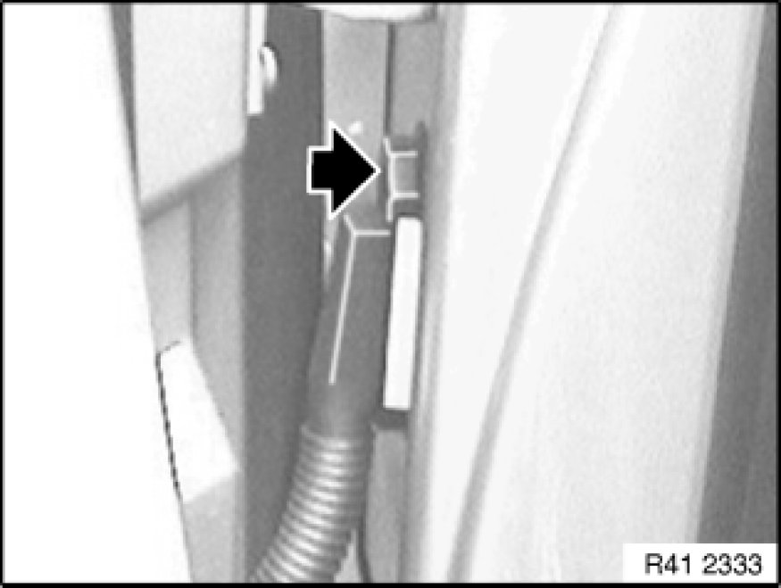
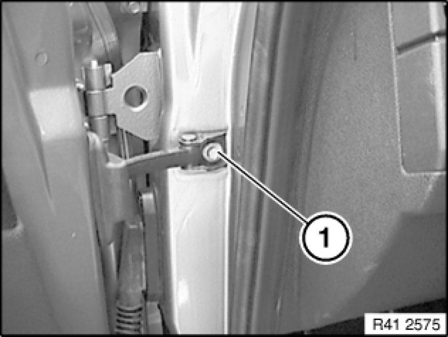
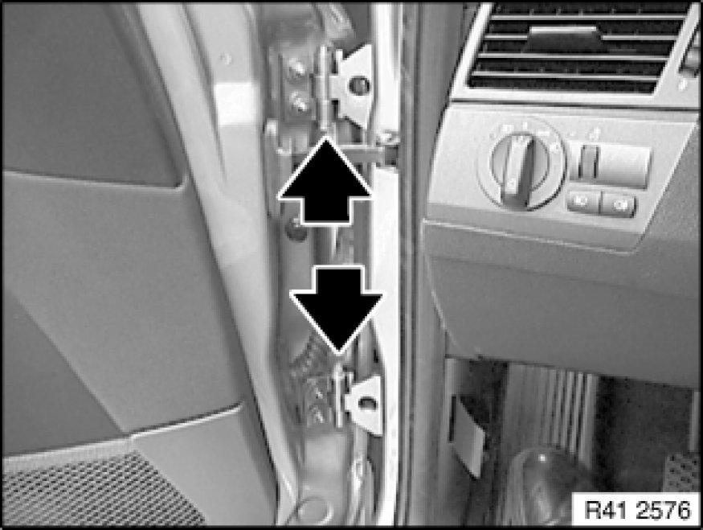
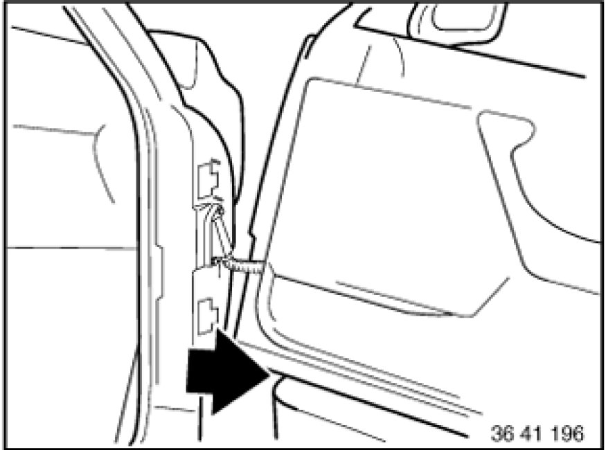
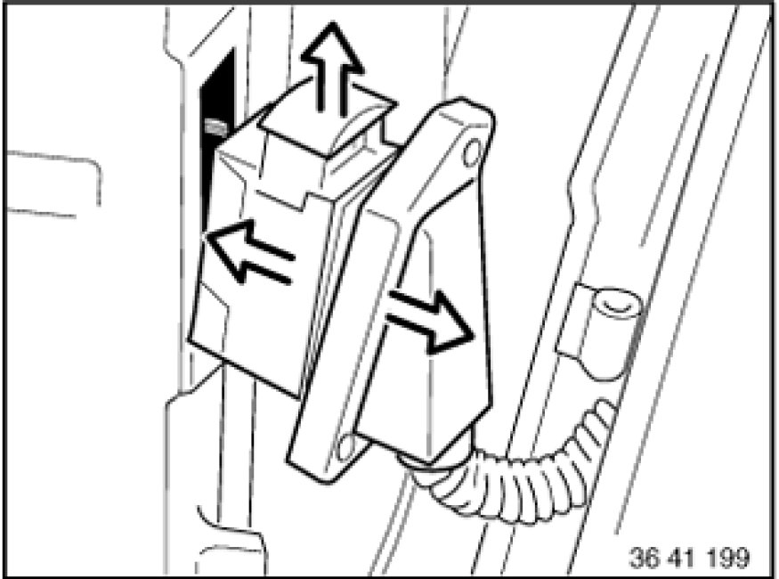

Removing and Installing Front Left or Right Door
41 51 080 - Removing and installing front left or right door

Important!
Do not damage adjoining body parts.
Cars with side airbags:
Observe airbag safety regulations 41 00 ... Handling Airbags and Restraint Systems.
The illustrations are schematic representations and are to be applied to the relevant vehicle type.
Open door.

Warning!
Side airbag is installed in door trim panel: Disconnect battery Instructions for Disconnecting and Connecting Battery.

Release screw on connector frame.

Release screw (1) on door retainer.

Important!
Secure door against falling out.
Release screws between both hinge elements at top and bottom.
Pull both screws out of hinges.
Tightening torque 41 51 1AZ [1][2]41 51 Front Door (s).

Pull out door sideways and place it on a suitable surface.

Pull plug connection from door pillar, unlock by pulling out bar and detach.
Installation Note:
If necessary, adjust front door Adjustments.